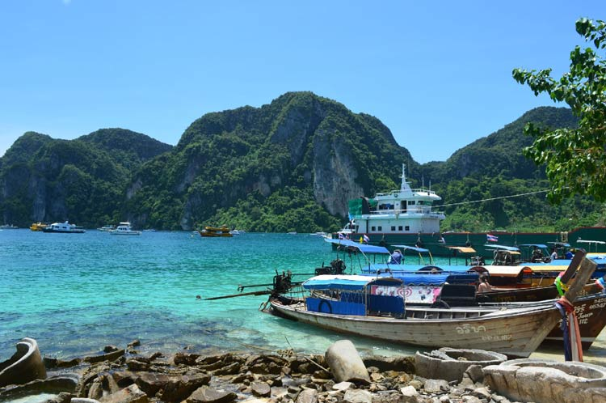
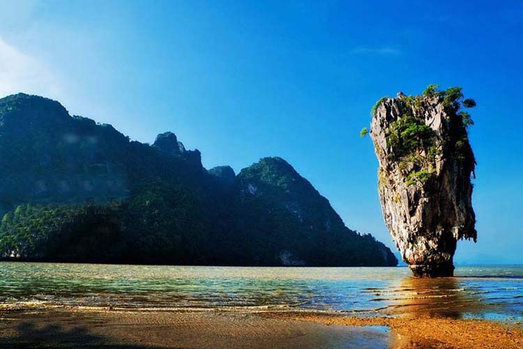

一年总有那么12个月想出去转转，尤其是受了那封最有情怀的辞职信的启发后，更是每天都想出去溜溜。再者说，炎热的夏天就要来了，一定要抓紧机会去凉爽的海水里泡泡，囤积一点冰爽，这样才有勇气过夏天呀！走吧，去普吉岛～
普吉岛位于泰国西南方，安达曼海东南部海面之上，是一座南北较长、东西稍窄的狭长状岛屿，北以巴帕海峡与泰国本土的攀牙府相邻，而东侧则是隔着攀牙湾与对岸的甲米府呼应，西岸及南岸则都濒临安达曼海。
宽阔美丽的海滩、洁白无瑕的沙粒、碧绿翡翠的海水，作为印度洋安达曼海上的一颗“明珠”，普吉岛无可挑剔！
皮皮岛由大皮皮和小皮皮组成，这一片美丽海域是怒江的入海口。游客们通常住在大皮皮岛上，两座岛由一条“走廊”连接起来。这条走廊就是皮皮岛最热闹的地方，很多旅店、餐厅、酒吧、潜水学校、旅行代理和小摊贩，密集地分布在小巷左右。走廊两边是两个非常漂亮的海湾，一个叫罗达拉木湾，一个叫通赛湾，在这两个海湾之间往返只要步行10分钟，相当悠闲写意。
安静的街道与夜晚相比少了几分喧闹，空气也充满了闲适和浪漫的气氛，鸟儿在树上自娱自乐地唱歌，猫儿在路旁打着盹儿。走在松软的沙滩上，感受脚丫被细沙温柔抚摸的感觉。
攀牙湾位于普吉岛东北角75公里处，属于攀牙府，被誉为全岛风景最美丽的地方，有泰国的“小桂林”之称。
这里遍布着数以百计的石灰岩小岛，小岛的名称与其形状极为吻合。还有巧夺天工的钟乳石岩穴和数不清的怪石、海洞。其中007岛（也称铁钉岛）、钟乳岛石洞（即佛庙洞和隐士洞）更以其天然奇景而著称。海湾内遍布珍贵的胎生植物红树林，红树林与小渔村之间有河道，可坐在小船上观赏红树林和小渔村。
1、初夏季节，说走就走，为盛夏囤积一点冰爽；
2、避开小长假，离人山人海远远的～